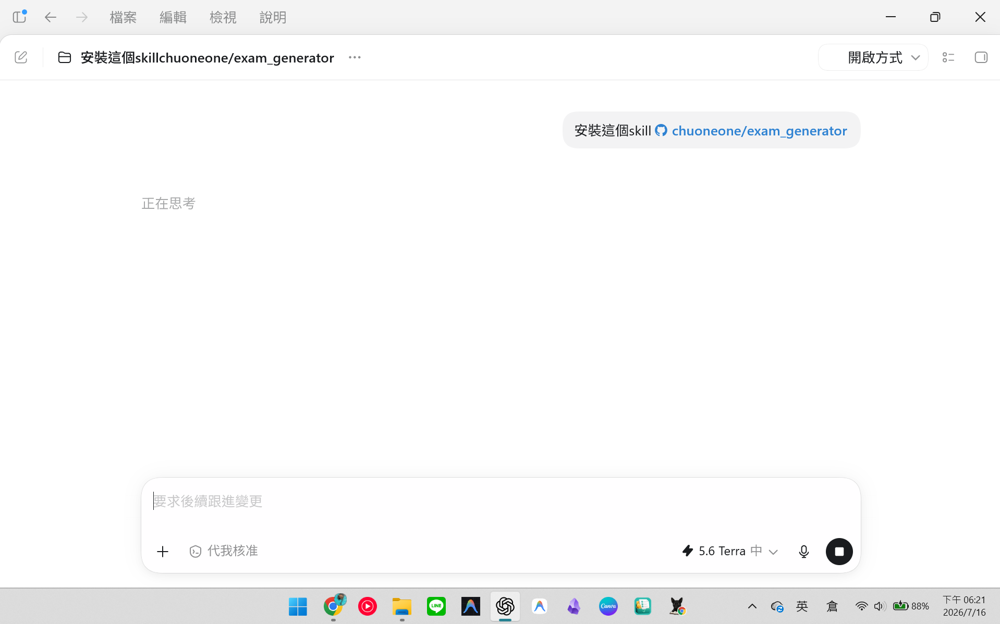
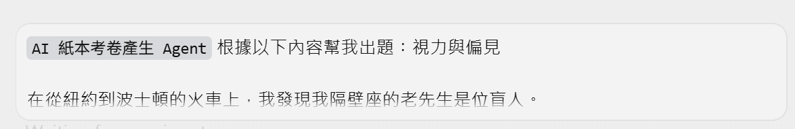
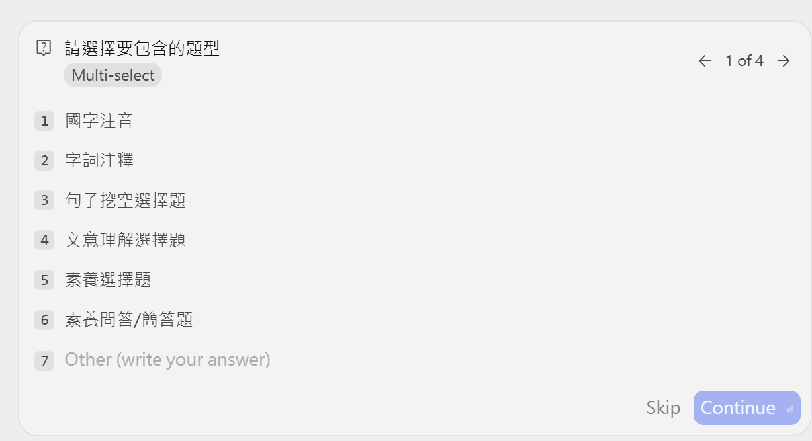
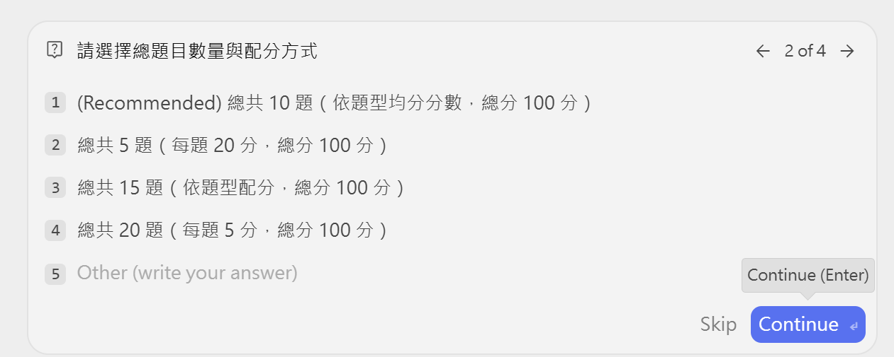
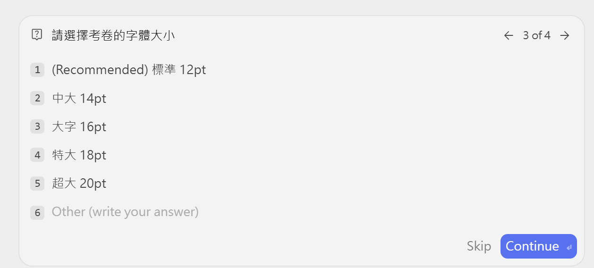
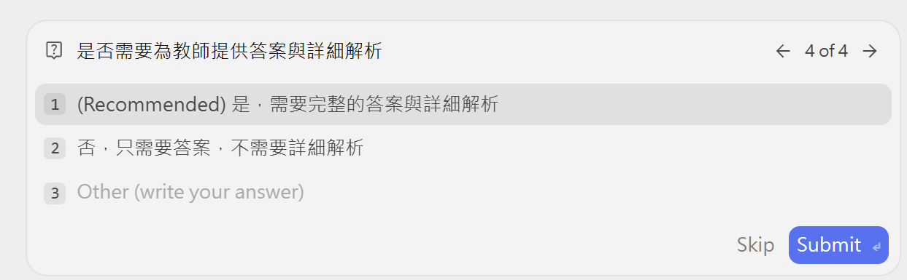
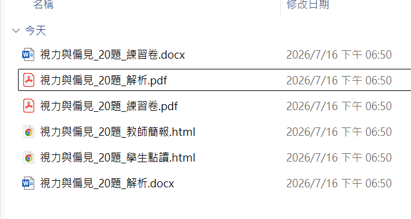
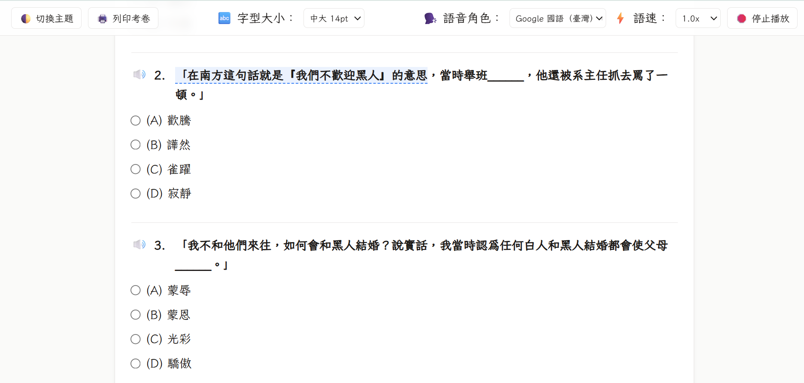
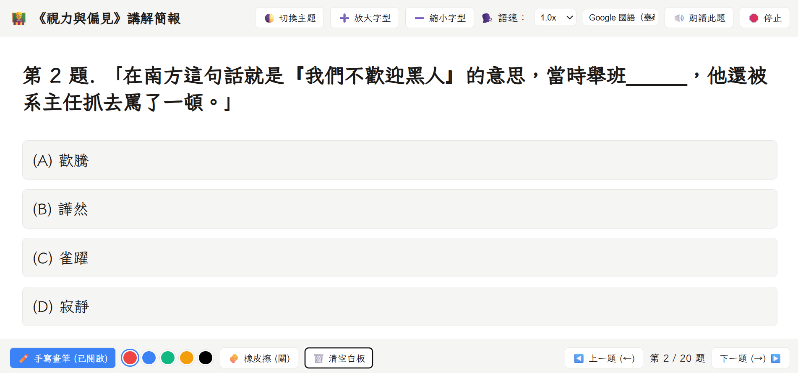
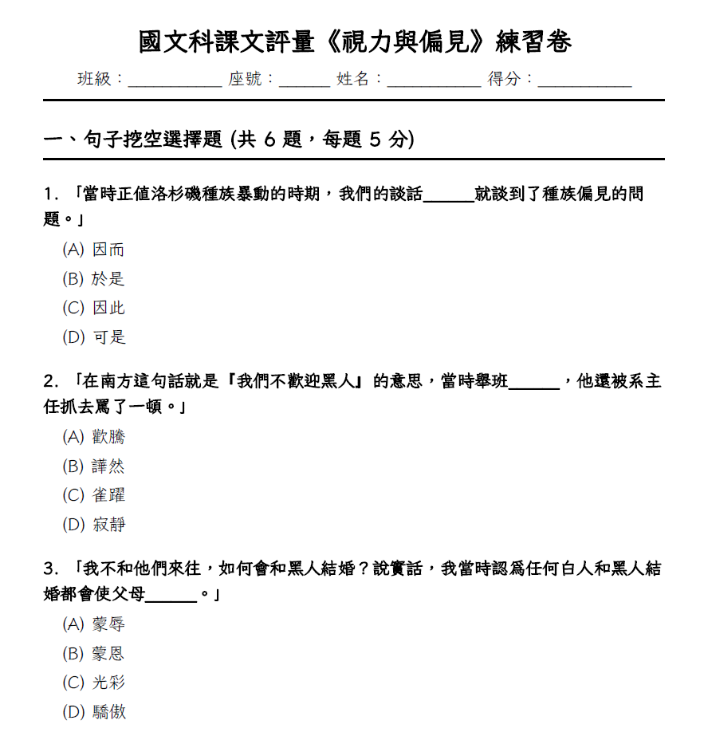

🧾
老師也能自己做
貼上教材，跟著選 4 個設定，
一次完成紙本、點讀與講解簡報。
🔗
在 AI 助理的對話框輸入：

安裝完成後，就能直接開始出題。
📚
告訴 AI 科目、範圍與題數；
也可以直接貼上課文內容。

教材越聚焦，題目越貼近教學目標。
📝
依學生需要，勾選一種或多種題型。

🔢
從建議的 10 題、5 題、15 題或 20 題，
選一個最符合這次練習的版本。

不用自己重算配分，
AI 會依選擇安排試卷結構。
🔠
依閱讀需求選 12pt 到 20pt，
需要大字版也能直接選。

💡
最後決定是否同步產生
答案與每一題的詳細解析。

建議選「是」：備課、講解與改題
都會省下不少時間。
📦
AI 會在同一個資料夾產出六種格式。

🔊
支援朗讀、語速調整、字體放大，
讓學生能用自己的節奏練習。

🧑🏫
全螢幕投影片、整題朗讀與手寫白板，
答案預設不直接顯示。

不用再把考卷另外做成投影片，
課堂講解直接開檔就能用。
🖨️
學生練習卷 PDF／Word，
需要手動調整格式時也很方便。

AI 幫你先完成第一版，
最後仍請依學生需求檢查與調整。
Google 搜尋「米克師」
進入【教材與評量】
找到【AI 數位與紙本考卷產生器】
📌
安裝指令：
幫我安裝這個 Skill：
https://github.com/chuoneone/exam_generator